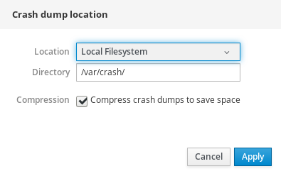

Chapter 9. 在Web控制台中配置kdump
以下部分概述了如何通过Red Hat Enterprise Linux Web控制台设置和测试kdump配置。Web控制台是Red Hat Enterprise Linux 8的默认安装的一部分，并在启动时启用或禁用kdump服务。此外，Web控制台可以方便地为kdump配置保留内存。或以未压缩或压缩格式选择vmcore保存位置。
先决条件
- 有关更多详细信息，请参阅Red Hat Enterprise Linux Web控制台 。
下面的过程说明如何使用Red Hat Enterprise Linux Web控制台界面中的Kernel Dump选项卡配置为kdump内核保留的内存量。该过程还描述了如何指定vmcore转储文件的目标位置以及如何测试配置。
先决条件
- 操作Web控制台简介。
程序
- 打开
Kernel Dump选项卡并启动kdump服务。 - 通过命令行配置
kdump内存使用情况。 单击“
Crash dump location选项旁边的链接。
从下拉列表中选择“
Local Filesystem选项，并指定要在其中保存转储的目录。或者，从下拉列表中选择
Remote over SSH选项，以使用SSH协议将vmcore发送到远程计算机。使用远程计算机地址，ssh密钥位置和目标目录填充
Server，ssh key和Directory字段。另一种选择是从下拉列表中选择
Remote over NFS选项并填充Mount字段，以使用NFS协议将vmcore发送到远程计算机。注意
勾选“
Compression复选框以减小vmcore文件的大小。
通过崩溃内核来测试您的配置。

警告
此步骤会中断内核的执行并导致系统崩溃和数据丢失。
其他资源
- 有关
kdump当前支持的目标的完整列表，请参阅支持的kdump目标 。 - 有关如何配置SSH服务器和设置基于密钥的身份验证的信息，请参阅在Red Hat Enterprise Linux中配置基本系统设置 。